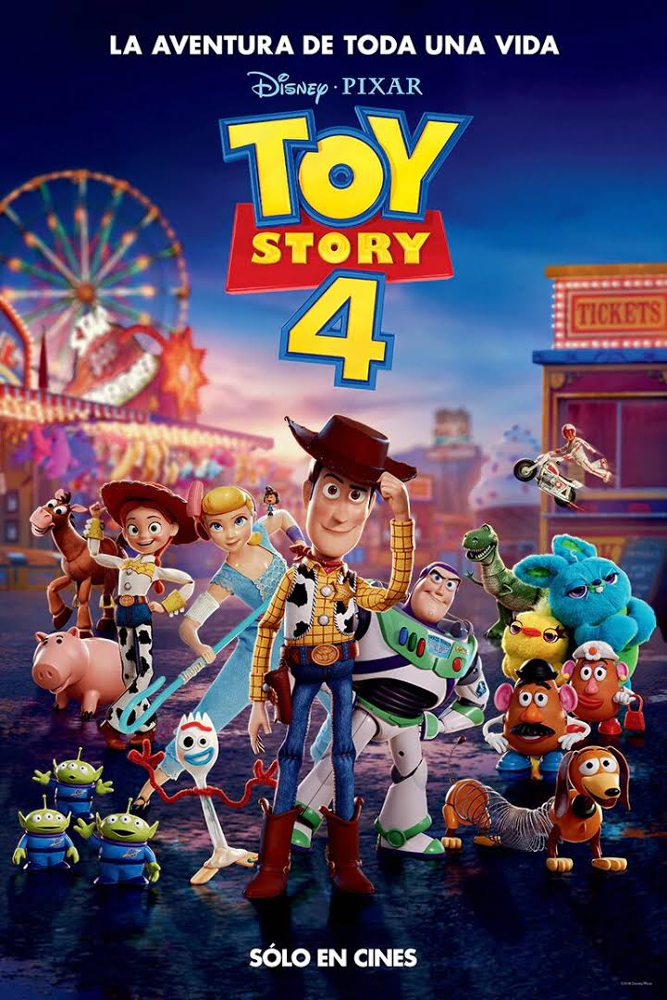
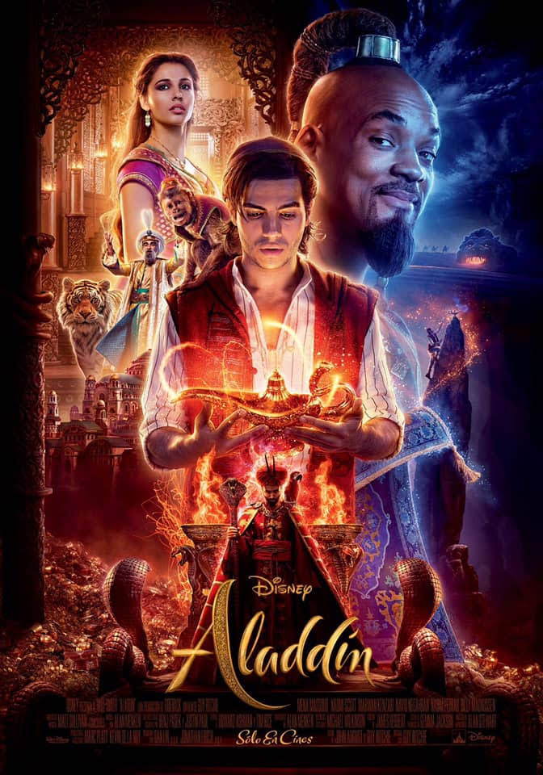
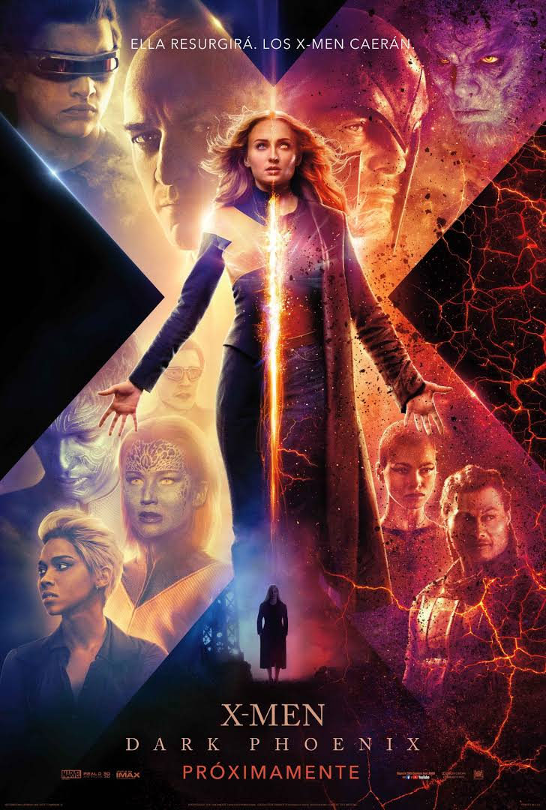
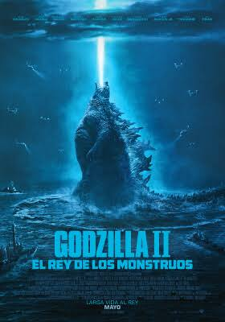

|  | Toy Story 4 Woody siempre ha tenido claro cuál es su labor en el mundo y cuál es su prioridad: cuidar a su dueño, ya sea Andy o Bonnie. Sin embargo, Woody descubrirá lo grande que puede ser el mundo para un juguete cuando Forky se convierta en su nuevo compañero de habitación. Los juguetes se embarcarán en una aventura de la que no se olvidarán jamás. | Hombres de negro: internacional En esta entrega, los Hombres de Negro, que siempre han protegido la Tierra, deben descubrir un topo dentro de la organización MIB. Para luchar contra unos nuevos malévolos aliens camuflados como humanos utilizarán una gran tecnología. | |
| Annabelle 3 vuelve a casa Ed y Lorraine Warren tratan de encerrar bajo llave a Annabelle, una muñeca poseída. Como demonólogos la colocaran en una vitrina bendecida como medida de seguridad, sin embargo, una noche terrorífica Annabelle despertará a otros espíritus malignos que se encuentran en la habitación y que tendrán una nueva fijación: la hija pequeña del matrimonio y sus amigos. |  | Aladdín Aladdin es un ladronzuelo que se enamora de la hija del Sultán, la princesa Jasmine. Para poder conquistarla aceptará un desafío de Jafar. Aladdín tendrá que entrar en una cueva en mitad del desierto y conseguir una lámpara mágica que contiene al Genio que será el encargado de concederle todos sus deseos. | |
|  | X-Men: Dark Phoenix Los X-Men se enfrentan a su enemigo más poderoso: uno de sus miembros, Jean Grey. Durante una misión de rescate en el espacio, Jean casi muere al ser alcanzada por una misteriosa fuerza cósmica. Cuando regresa a casa, esa radiación la ha hecho más poderosa, pero mucho más inestable. Jean cae en una espiral fuera de control haciendo daño a aquellos que más quiere. | Solteras Ana sueña con llegar casada a los 30, pero no encuentra al hombre ideal. Decidida a cumplir con su objetivo, busca la ayuda de una casamentera, quien, a través de sus cursos, orienta a mujeres desesperadas por encontrar pareja. | |
|  | Godzilla 2 el rey de los monstruos Seguimos las aventuras de unos criptzóologos de una agencia mientras tratan de enfrentarse a unos monstruos entre los que se encuentra el propio Godzilla. Entre todos intentarán frenar a estas ancianas criaturas que harán todo lo posible por sobrevivir, arriesgando toda la vida de los humanos. | Ecos mortales Los fantasmas habitan en lo que queda del mundo luego de un suceso apocalíptico. | |
| La viuda Frances encuentra un bolso extraviado en el metro de Nueva York y se lo entrega a su legítima propietaria, una pianista amigable y un tanto excéntrica llamada Greta. La madre de Frances ha fallecido recientemente y ve en Greta una figura materna que, en cierta medida, suple el vacío que ha quedado en su corazón. Entre ellas nace una amistad que, poco a poco, el comportamiento de Greta convierte en algo aterrador. | Gloria Bell Moore es una divorciada de espíritu libre que cuando no está en la oficina está bailando por las noches en las discotecas de Los Ángeles. Sin embargo, su vida da un giro inesperado cuando se encuentra a Arnold y se ve inmersa e un romance. | ||
| Rocketman "Rocketman" cuenta la trayectoria del artista Elton John, desde sus años como niño prodigio del piano en la Royal Academy of Music hasta llegar a ser una superestrella de fama mundial gracias a su talento y a la duradera asociación con su letrista Bernie Taupin. | John Wick 3: Parabellum John Wick regresa de nuevo pero con una recompensa sobre su cabeza que persigue unos mercenarios. Tras asesinar a uno de los miembros de su gremio, Wick es expulsado y se convierte en el foco de atención de todos los sicarios de la organización. |